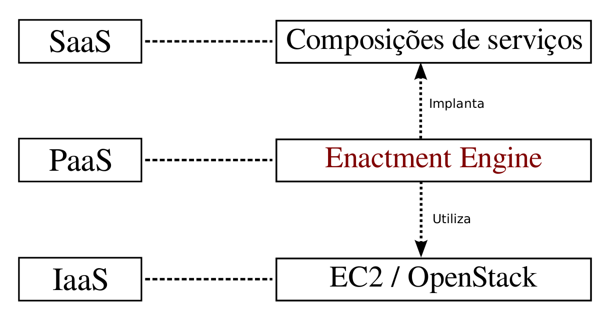
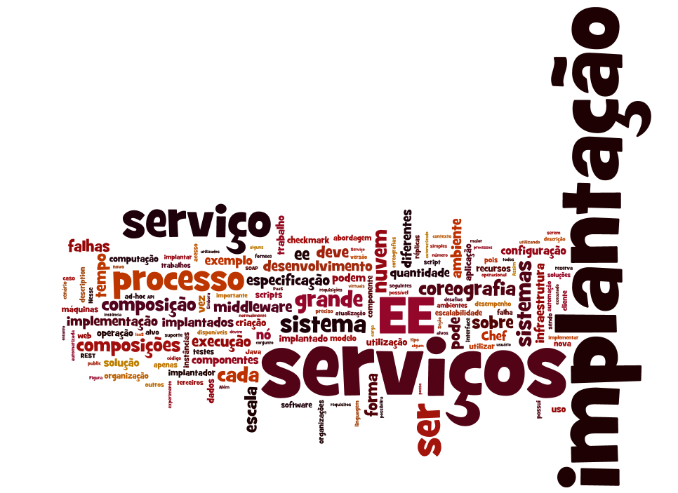

A implantação de composições de serviços web de grande escala apresentam vários desafios, tais como falhas corriqueiras na infraestrutura, heterogeneidade tecnológica, distribuição do sistema por diferentes organizações e atualização frequente dos serviços em operação. Nesta dissertação, estudamos como uma implantação automatizada baseada em middleware pode auxiliar na superação de tais desafios. Para isso, desenvolvemos o CHOReOS Enactment Engine, um sistema de middleware que possibilita a implantação distribuída e automatizada de composições de serviços web em uma infraestrutura virtualizada, operando no modelo de computação em nuvem denominado Plataforma como um Serviço. O middleware desenvolvido é avaliado qualitativamente em comparação a abordagens de implantação ad-hoc e quantitativamente pela sua escalabilidade em relação ao tempo de implantação das composições de serviços.
Implantação de software, composições de serviços, coreografias, serviços web, computação em nuvem, grande escala.
Entendeu zero do que tá escrito acima?! Clique aqui!

Download da dissertação aqui (pdf).
Download da apresentação aqui (pdf).
Deploying large-scale service compositions on the cloud with the CHOReOS Enactment Engine Leonardo Leite, Carlos Eduardo Moreira, Daniel Cordeiro, Marco Aurélio Gerosa e Fabio Kon The 13th IEEE International Symposium on Network Computing and Applications 2014 (IEEE NCA14)
Download do artigo aqui (pdf).
